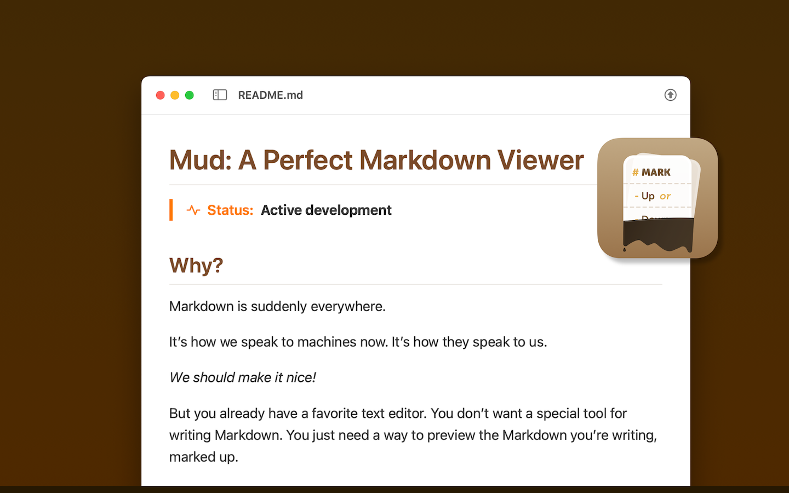

Mud: Mark Up or Down
Markdown is suddenly everywhere.
It’s how we speak to machines now. It’s how they speak to us.
We should make it nice!
But you already have a favorite text editor. You don’t need a special tool for writing Markdown. You just need a way to preview the Markdown you’re writing, marked up.
That’s what Mud is for. It renders Markdown beautifully, bright or dark. It automatically reloads the document when you save it — or when Claude Code writes to it, or Codex, or whatever you use.

Mud shows you both sides of every document:
- Mark Up renders your Markdown as styled HTML — GitHub-flavored, with syntax-highlighted code.
- Mark Down shows the raw source with line numbers.
Hit Space to flip between them. Your scroll position carries over.
Mud is a Mac-assed Mac app with excellent command-line tooling. It’s free and it’s open source.
It does one thing — it marks up Markdown! — and it does it really well.
Gimme
Download Mud.app at GitHub.
Highlights
- GitHub-flavored Markdown with syntax-highlighted code blocks
- Raw source view with its own syntax highlighting and line numbers
- Space bar flips between views; scroll position preserved
- Four color themes — Austere, Blues, Earthy (default), Riot
- Auto / Bright / Dark lighting
- Table of contents sidebar
- Auto-reload on file change
- Find (Cmd+F)
- Print and Open in Browser
- Zoom, readable column, word wrap, and line number toggles
Command line tool
Install from Mud > Install Command Line Tool… to get a mud command.
mud file.md # Open a file in the app
mud -u file.md # Render to HTML (mark-up view)
mud -d file.md # Render to HTML (mark-down view)
echo "# Hi" | mud -u # Pipe stdin to HTML
mud -u --theme riot file.md # Pick a theme
License
MIT with Commons Clause. See Doc/LICENSE.md.